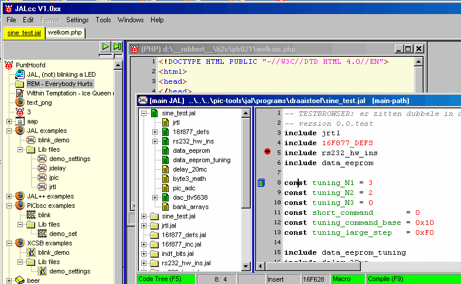
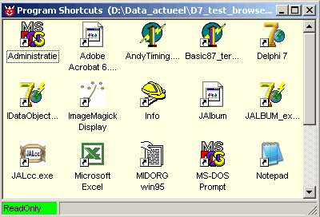

august 2006
Quick Introduction
Introduction
JALcc is an Integrated Development Environement (IDE), orginally developed for technician (JAL / pic).
The main parts of the program are the Document-List (on the left side) and one or more Viewers / Editors (on the right side). The Document-List is an hierarchical list of links to documents, webpages, etc, build by the user. The build-in Viewers / Editors should cover a broad range of documents and will be extended in the near future.
The general idea behind JALcc is, that a technician (and not only technicians, my family uses it too) should be able to do almost all his or her computer work within the skeleton of JALcc.
Some major tasks JALcc should be able todo
JALcc tries to follow the KISS principle, by

Child Tabs
On the top you see tabs, representing the open viewers / editors The text of a tab is either the filename or in some cases the name of the viewer / editor. The color of the tabs is definien by the type of viewer / editor and can be set by the user (so all tabs of the same kind will have the same color). The tab linked to the active window has its text underlined. By clicking on a tab the associated viewer / editor gets focused. Right clicking on a tab, closes the window.
Quick Launch Buttons
The top element of the document-list (named 'PuntHoofd' or mainpage) is a special folder ("punthoofd_main", in the root of the inifile) and is meant to hold shortcuts to often used programs. Normally this window is made readonly, so you can only launch the programs through doubleclikcing their shortcuts. By clicking on the lime panel in the statusbar, called "ReadOnly", the label changes to "Editable" (in red) and you can modify the properties of the shortcuts, drag in new shortcuts or delete shortcuts (Rearranging is not possible). In fact this window is just a normal windows explorer, without the normal annoyances, so you'll even gt youw own right mouse menu.

Just above the document list, there are a number of quick launch buttons, which are micture of an MRU-list (Most Recent Used) and the windows quick launch bar. Everytime you launch an application from the mainpage, the shortcut is added to a free or flexible position in the quick launch bar. You can click with the right mousebutton on an occupied quick launch button, to select if it's fixed or flexible.
The number of available quick launch buttons can be set to the menu Settings | Global Settings | ...
You can also reach the mainpage, by clicking on the ambulance-button.
After you've launched a number of programs, the buttons may look like this:
MainMenu
|
File |
Edit |
Format |
Settings |
Tools |
Windows |
Help |
|
New / Open Save (Ctrl-S) Save As Print Preview Page Setup Printer Setup Export Exit |
Undo Redo Cut Copy Paste Paste As Insert File Delete Select All Find Replace Goto ... |
|
Global Settings Module Settings |
Compile-1 Compile-2 Show Templates Testing |
Tile Horizontal Tile Vertical Cascade Arrange Icons |
JALcc language Send Bug report About |
File Menu
New / Open
Opens a new or an existing file.
The default parameters for the open dialog are derived from the document-list or the editor/viewer window, whichever has focus.
The open-dialog starts in the directory of the currently active file (from document-list or editor/veiwer window) and shows the files with the same type. The default extension (added if the file-extension is omitted) is also according the active filetype.
Save (Ctrl-S)
Saves the active child window (also when the document-list has focus).
There is not much need for this command, because all files will be saved on a regular base and on critical moments (i.e. compiling).
For some viewers Save has the same behaviour as SaveAs (ie. the webbrowser).
Save As
Save as always works on the active viewer/editor window. The behaviour is different compared to most other programs. I'm not convinced this is the optimal method, so ideas are welcome.
Save as, saves the currently active file, and makes a copy with the new name. The orginal file stays open and not the newly created one. So it acts more like an export function.
Print, Print Preview, Page Setup, Printer Setup
Always works on the active viewer/editor, and behaves as usual.
Export
Works always on active viewer / editor. The type active viewer / editor determines what kind of exports are supported.
Exit
Closes the application.
Edit Menu
These are just common editor commands, you're used form other editors. The active
Undo, Redo, Cut, Copy, Paste, Paste As, Insert File, Delete, Select All, Find, Replace, Goto
Format Menu
not yet implemented
Settings Menu
Global Settings
This lets you change the global settings of JALcc. The global settings are those settings that yields for all (or most) viewers / editors and for the document-list.
Module Settings
Let you change the settings for the active viewer / editor.
Tools Menu
Compile-1
Compiles the main language file according to compiler settings 1.
Compile-2
Compiles the main language file according to compiler settings 2.
Show Templates
All code editors have a template window (can be filled by the user), from which it's easy to insert statements in the current editor.
Windows Menu
This is just the normal windows menu:
Tile Horizontal, Tile Vertical, Cascade, Arrange Icons
Help Menu
JALcc Help
Help documentation about this program.
module help
Help information about the active module. Some modules also have F1-context-sensitive help build in.
Send a bug report
This will start a new message (in your own default email program) with the correct address, a tagged subject and some settings files attached, which will help me to solve the problem. You can edit the message, change attachment or even to decide not to send the message.